09.4 몬테카를로법으로 정책 제어하기
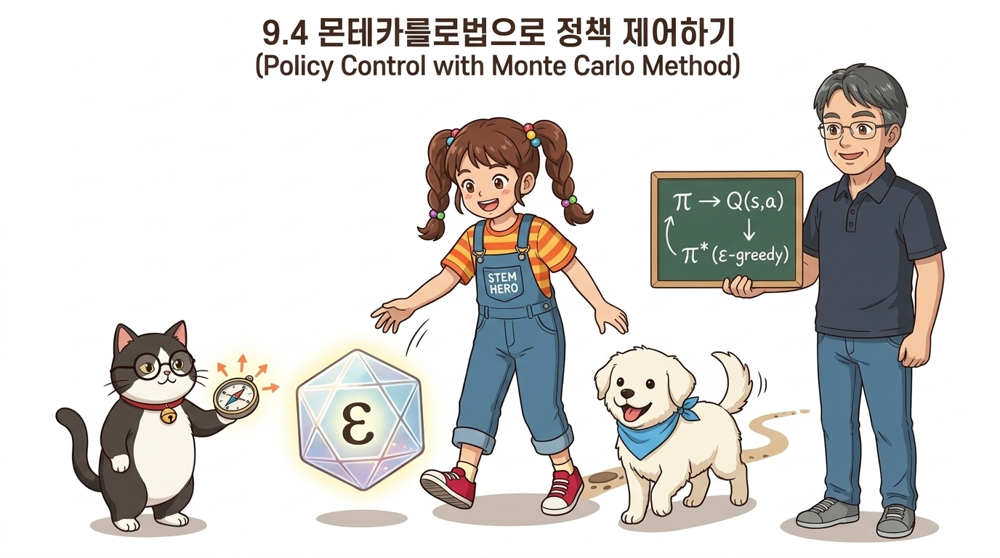
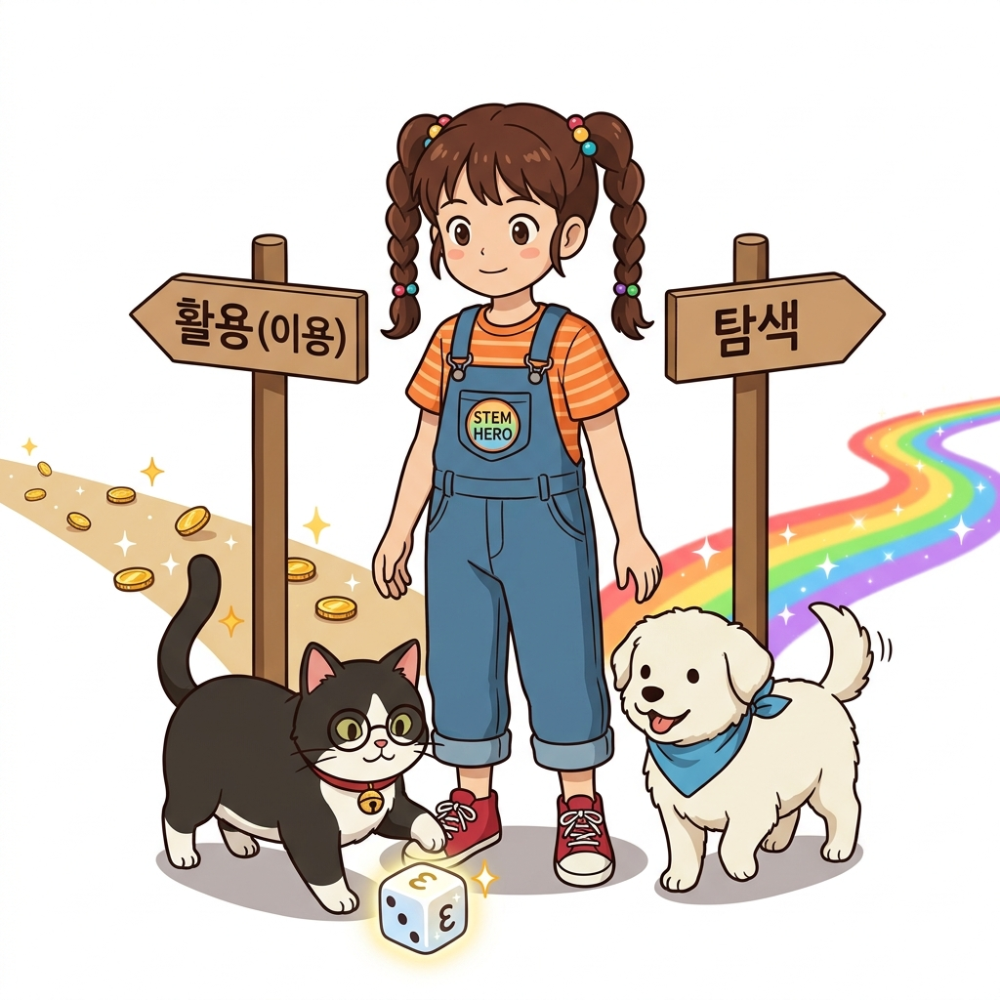
그림 09-4-1 탐색-이용(Exploration-Exploitation) 갈림길에서 지니의 입실론 주사위 마법을 보며 나아갈 길을 결정하는 도로시가치 함수 평가를 넘어 최적 정책을 스스로 찾아 나가는 정책 제어(Policy Control)와 탐색-이용의 균형을 다룹니다. 무작위 행동 탐색의 비율을 제어하는 ε-탐욕 정책(ε-greedy policy)과 시시각각 발전하는 최신 데이터에 적응하는 고정 학습률 α 기반 지수 이동 평균을 활용하여 몬테카를로법으로 최적 솔루션에 수렴해 나가는 전체 라이프사이클을 요정 지니의 딜레마 주사위 놀이와 이호진 교수님의 4개의 문 비유로 완벽히 정복해 봅시다!
09.4.1 정책 제어의 기초: 평가와 개선의 탁구 핑퐁
앞서 9.2절과 9.3절에서는 몬테카를로법으로 ‘정책 평가(Policy Evaluation)’를 수행했습니다. 어떤 고정된 정책(예: 4방향 25% 균등 무작위 정책)이 주어졌을 때 각 칸의 가치가 얼마인지를 채점하는 작업이었습니다.
하지만 강화학습의 궁극적인 목표는 단순히 남이 준 정책을 채점하는 것에 머무르지 않고, “어떻게 하면 가장 많은 보상을 획득할 수 있는 최고의 행동 지침(최적 정책 π*)을 스스로 찾아낼 수 있을까?”입니다. 이처럼 최적 정책을 찾아 나가는 전 과정을 ‘정책 제어(Policy Control)’라고 부릅니다.
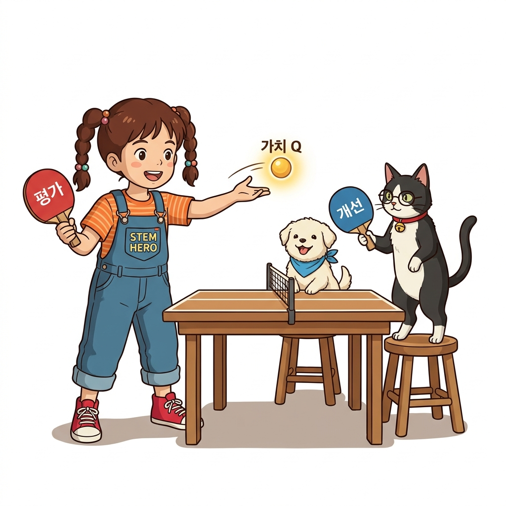
그림 09-4-2 정책 평가(Evaluation)와 정책 개선(Improvement)의 과정을 탁구 핑퐁 패들로 주고받는 지니와 도로시최적 정책은 4장에서 배운 ‘정책 반복(Policy Iteration)’의 큰 틀과 마찬가지로, ‘평가’와 ‘개선’을 탁구공 치듯 번갈아 반복하여 완성됩니다:
- ‘평가(Evaluation)’ 단계: 현재 정책을 바탕으로 환경 속을 직접 걸어 다니며 경험을 쌓고, 각 상태나 행동의 가치 함수를 측정합니다.
- ‘개선(Improvement)’ 단계: 가치 함수가 가장 높은 쪽으로 행동 확률을 수정(탐욕화)하여 정책을 한 단계 업그레이드합니다.
이 두 단계를 끊임없이 주고받으면, 처음에는 서툴렀던 무작위 정책이 점차 다듬어져 결국 최적 정책에 도달하게 됩니다.
1) 왜 모델 프리 강화학습에서는 V(s) 대신 Q(s, a)를 써야만 할까요?
가치 함수를 개선 단계에서 활용할 때, 우리는 4장에서 배운 탐욕화(Greedy Selection) 공식을 떠올릴 수 있습니다. 수식으로는 다음과 같이 두 가지 방식으로 표현할 수 있습니다:
μ(s) = argmaxa Q(s, a) (식 9.3: 행동 가치 함수 기반)
μ(s) = argmaxa ∑s' p(s' | s, a) [r(s, a, s') + γV(s')] (식 9.4: 상태 가치 함수 기반)
두 식 모두 ‘가장 큰 가치를 주는 행동’을 선택하여 새로운 결정적 정책 μ(s)를 만드는 탐욕화 식입니다. 그런데 왜 우리는 몬테카를로 정책 제어에서 [식 9.4]의 상태 가치 함수 V(s)를 버리고 [식 9.3]의 행동 가치 함수 Q(s, a)를 필사적으로 선택해야 할까요?
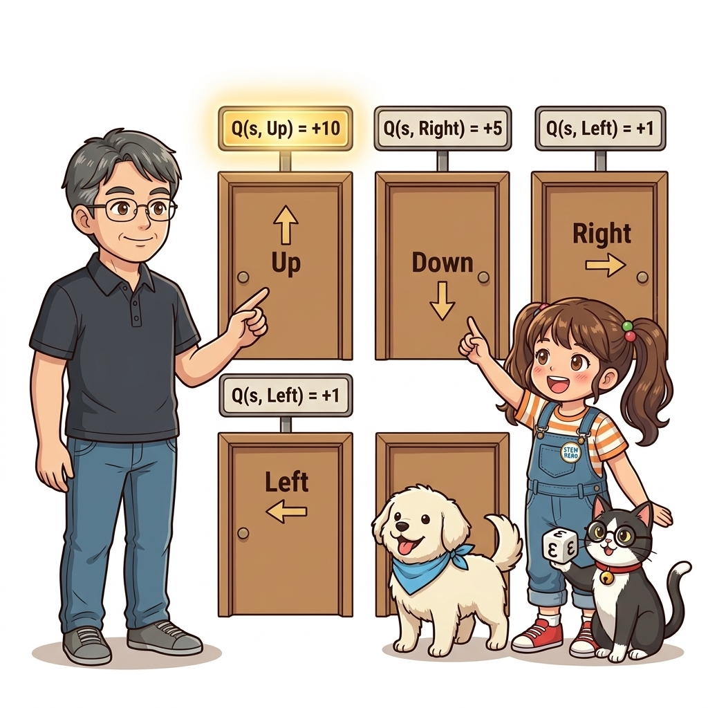
그림 09-4-3 이호진 교수님이 상·하·좌·우 4개의 문 위에 붙은 행동 가치 표지판(Q(s, Up) = +10 등)을 보여주며, 미지의 미로에서 환경 모델 없이 즉시 최선의 문을 고를 수 있는 Q 함수의 결정적 위력을 도로시와 토토, 지니에게 설명하는 직강 장면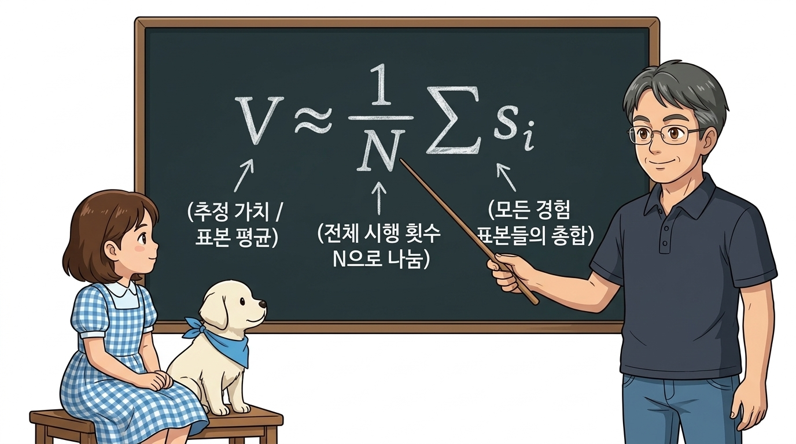
그림 09-4-4 환경 모델 전이 확률이 없어 막히는 V(s) 대신, 행동 가치 Q(s, a)로 즉시 최적 행동을 선택하는 도로시와 지니👨🏫 이호진 교수님의 ‘방과 4개의 문’ 비유:
“도로시야, 상태 가치 함수 V(s)는 ‘지금 내가 서 있는 방이 얼마나 좋은 방인가’를 나타내는 점수란다.
만약 방에 상, 하, 좌, 우 4개의 문이 있을 때, 어느 문으로 나가야 할지 결정하려면 ‘각 문을 열었을 때 어떤 방으로 이어지는지’ 미로 전체의 설계도(p(s' | s, a))를 에이전트가 미리 완벽하게 알고 있어야만 다음 방의 점수 V(s')를 가중 평균하여 비교할 수 있지.
하지만 환경 모델을 전혀 모르는 강화학습에서는 그 설계도가 아예 없단다!
반면에 행동 가치 함수 Q(s, a)는 ‘각 문고리 위에 직접 적혀 있는 점수 표지판’이란다!
위쪽 문 표지판에는 ‘+10점’, 오른쪽 문 표지판에는 ‘+5점’이라고 적혀 있다면, 문 뒤에 어떤 미로가 펼쳐져 있는지 설계를 전혀 몰라도 단순히 가장 큰 숫자가 적힌 위쪽 문(argmaxa Q)을 열고 나가면 끝이란다!”
| 이것이 바로 모델 프리(Model-Free) 강화학습의 핵심입니다. 환경 모델의 확률 수식 p(s' | s, a)를 모를 때는 [식 9.4]를 계산할 방법이 전혀 없으므로, 표지판 역할을 해주는 행동 가치 함수 Q(s, a)를 평가 대상으로 삼아야 합니다. |
2) Q 함수의 평가: 상태에서 상태-행동 쌍으로의 확장
Q 함수를 바탕으로 정책을 개선하려면, 먼저 Q 함수를 정확히 ‘평가’할 수 있어야 합니다.
9.2절과 9.3절에서 배운 상태 가치 함수 V(s) 평가 공식과 Q(s, a) 평가 공식을 나란히 비교해 보면, 대상이 단일 상태 s에서 상태-행동 쌍 (s, a)로 확장되었을 뿐 수학적 뼈대는 완전히 동일합니다:
[상태 가치 함수 V(s) 평가]
- 표본 평균 정의:
Vn(s) = (G(1) + G(2) + … + G(n)) / n
- 증분 갱신 점화식:
Vn(s) = Vn-1(s) + (1 / n) · [G(n) - Vn-1(s)] (식 9.5)
[행동 가치 함수 Q(s, a) 평가]
- 표본 평균 정의:
Qn(s, a) = (G(1) + G(2) + … + G(n)) / n
- 증분 갱신 점화식:
Qn(s, a) = Qn-1(s, a) + (1 / n) · [G(n) - Qn-1(s, a)] (식 9.6)
여기서 G(n)은 상태 s에서 행동 a를 취한 n번째 에피소드에서 실제로 얻은 누적 할인 수익입니다. [식 9.6]에 따라 에이전트는 경험이 쌓일 때마다 Q(s, a) 테이블을 실시간으로 갱신해 나갈 수 있습니다.
09.4.2 몬테카를로 정책 제어의 초기 순진한 버전과 2대 함정
이제 몬테카를로법으로 정책을 제어하는 기본 클래스 McAgent의 초기 버전을 작성해 보겠습니다.
from collections import defaultdict
import numpy as np
class McAgent:
def __init__(self):
self.gamma = 0.9
self.action_size = 4
random_actions = {0: 0.25, 1: 0.25, 2: 0.25, 3: 0.25}
self.pi = defaultdict(lambda: random_actions)
self.Q = defaultdict(lambda: 0) # V 대신 Q를 테이블로 채택! 키는 (state, action)
self.cnts = defaultdict(lambda: 0)
self.memory = []
def get_action(self, state):
action_probs = self.pi[state]
actions = list(action_probs.keys())
probs = list(action_probs.values())
return np.random.choice(actions, p=probs)
def add(self, state, action, reward):
data = (state, action, reward)
self.memory.append(data)
def reset(self):
self.memory.clear()
9.3절의 RandomAgent와 비교했을 때, 가치 테이블이 self.V에서 self.Q로 바뀐 점이 가장 큰 차이점입니다. 이제 키(Key)는 단일 좌표 state가 아니라 (state, action) 튜플이 됩니다.
이어서 정책을 완전 탐욕적으로 개선하는 greedy_probs() 함수와 에이전트의 update() 메서드를 추가해 봅시다:
def greedy_probs(Q, state, action_size=4):
qs = [Q[(state, action)] for action in range(action_size)]
max_action = np.argmax(qs)
action_probs = {action: 0.0 for action in range(action_size)}
action_probs[max_action] = 1.0 # ❶ 완전 탐욕 (최고 가치 행동에만 100% 확률 부여)
return action_probs
class McAgent:
# ... (앞부분 동일) ...
def update(self):
G = 0
for data in reversed(self.memory):
state, action, reward = data
G = self.gamma * G + reward
key = (state, action)
self.cnts[key] += 1
# ❷ 표본 평균 증분 갱신 (1/n 방식)
self.Q[key] += (G - self.Q[key]) / self.cnts[key]
# 현재 상태의 정책을 탐욕적으로 즉시 개선
self.pi[state] = greedy_probs(self.Q, state)
겉보기에는 완벽해 보이지만, 이 순진한 코드를 실행하면 에이전트는 미로를 제대로 탈출하지 못하고 심각한 오류에 빠집니다. 여기에는 인공지능 역사상 가장 유명한 2가지 치명적인 함정이 숨어 있습니다:
- 코드 ❶의 함정 (탐색 실종): 100% 완전 탐욕만을 고집하면 한 번 발견한 길에만 갇혀 다른 미지의 황금 경로를 영원히 탐색하지 못합니다.
→ 해결책: ε-탐욕 정책(Epsilon-Greedy Policy) - 코드 ❷의 함정 (비정상 문제 무시): 정책이 매 에피소드 발전하는데, 옛날 초보 시절의 바보 같은 경험과 오늘의 고수 경험을 똑같이 1/n 가중치로 균일하게 평균 내고 있습니다.
→ 해결책: 고정 학습률 α 기반 지수 이동 평균
이 2대 함정을 어떻게 극복하는지 차례대로 살펴봅시다.
09.4.3 첫 번째 개선: ε-탐욕 정책으로 탐색 확보
완전 탐욕(100% Greedy) 정책은 왜 미로 탈출에 실패할까요?
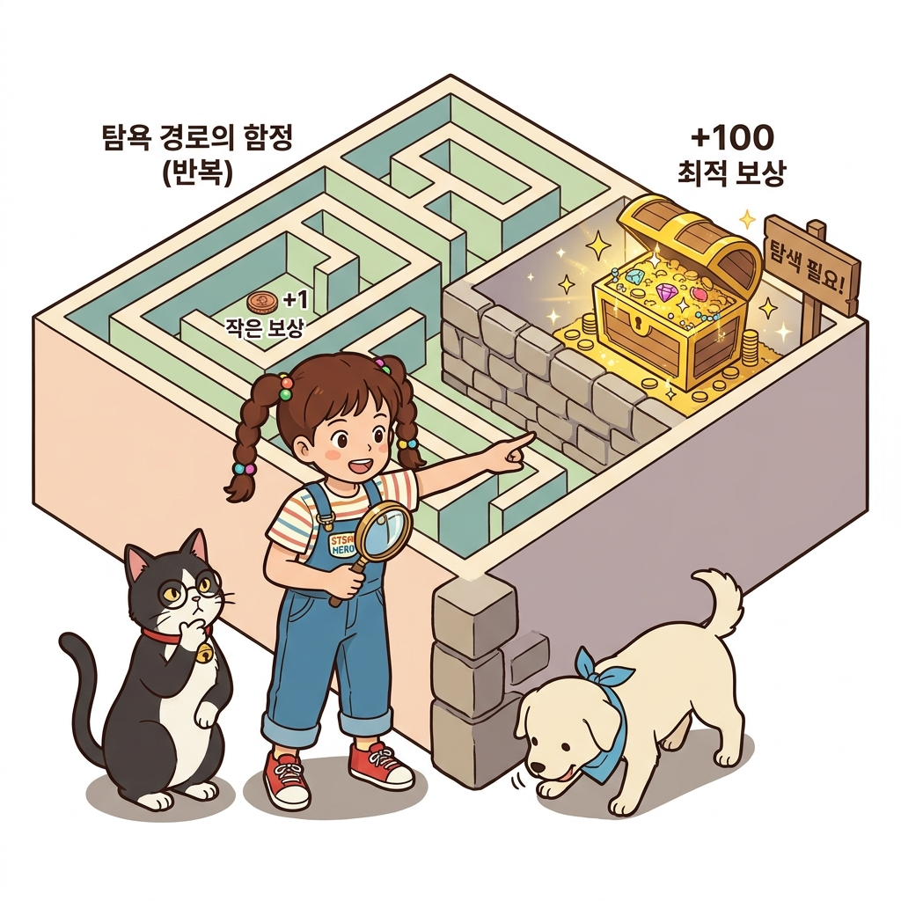
그림 09-4-5 초기의 작은 보상 경로에 갇혀 더 큰 보상이 숨겨진 황금 미로를 발견하지 못하는 탐욕 경로의 함정초기 에이전트는 아무것도 모른 채 우연히 바로 앞의 작은 사탕(+0.1점)을 발견합니다. 그러면 탐욕화 알고리즘에 의해 이 사탕을 향해 가는 행동의 확률이 즉시 100%로 굳어집니다.
그 뒤로는 평생 그 사탕 길만 반복해서 걷게 되며, 저 건너편 골짜기에 엄청나게 거대한 황금 보물 상자(+1.0 골인 지점)가 숨겨져 있다는 사실을 영원히 탐색하지 못합니다!
[!NOTE] 💡 탐색(Exploration)과 활용(Exploitation)의 딜레마
- 활용(Exploitation): 지금까지 쌓은 내 경험 중에서 현재 가장 좋다고 알려진 최선의 행동을 선택하는 것입니다 (늘 가던 단골 맛집 가기).
- 탐색(Exploration): 현재 최고는 아닐지 몰라도, 혹시 더 훌륭한 대박이 숨겨져 있을지 모르니 새로운 시도를 해보는 것입니다 (새로 문을 연 낯선 식당 가보기).
인공지능이 진정한 최적해에 도달하려면 항상 이 둘 사이의 절묘한 균형(Trade-off)을 유지해야 합니다.
이 딜레마를 해결하는 가장 대표적인 해법이 바로 ε-탐욕 정책(ε-greedy policy)입니다.
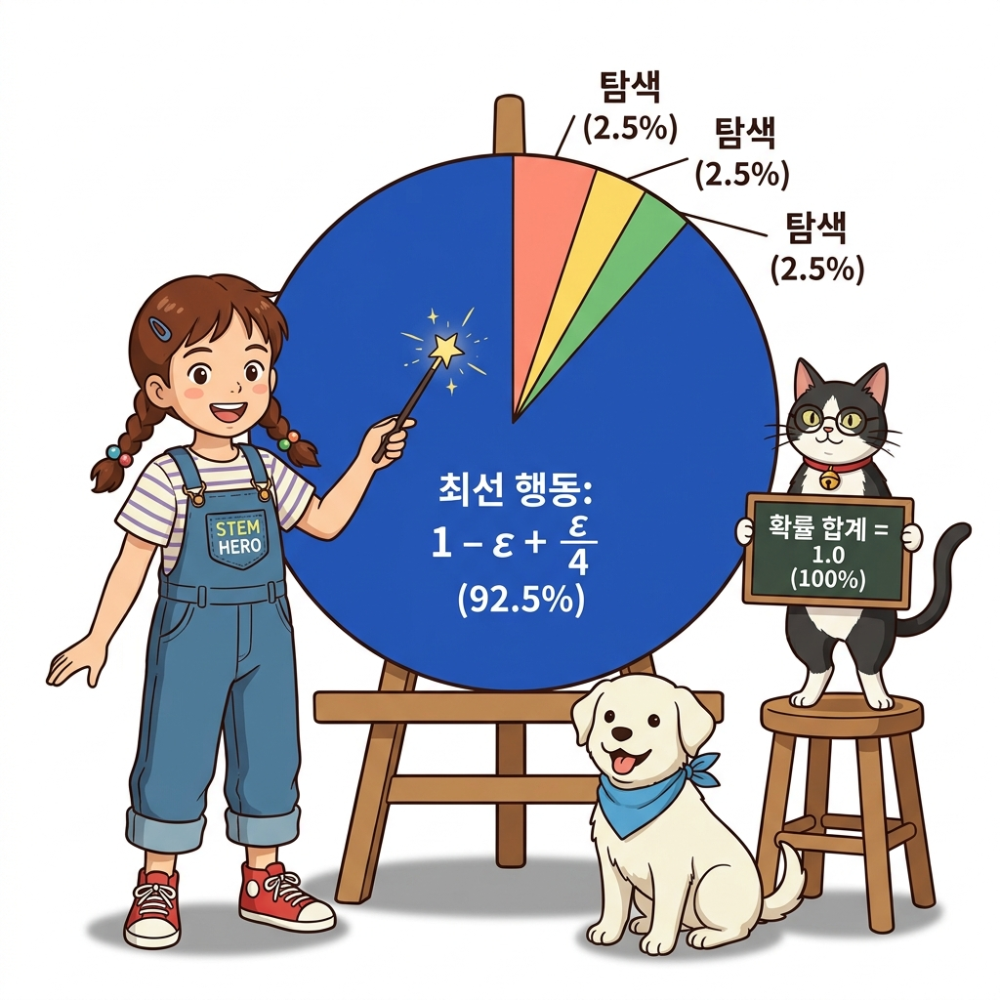
그림 09-4-6 최선 행동에 압도적인 확률(1 - ε + ε/4)을 부여하고 나머지 행동들에도 고른 탐색 확률(ε/4)을 나누어주는 입실론 탐욕 마법Q 함수가 가장 큰 최선 행동을 1 - ε의 높은 확률(예: 90%)로 선택하되, 그리스 문자 ε(입실론, 보통 0.1 즉 10%)만큼의 작은 확률을 남겨두어, 주사위를 굴리듯 아무 행동이나 무작위로 시도해 보게 하는 것입니다.
| 수학적으로 가능한 행동의 가짓수가 | A | 개(지금 예제에서는 4개)일 때, 각 행동이 선택될 확률은 다음과 같이 계산됩니다: |
최선 행동 a*의 확률 = (1 - ε) + (ε / |A|)
나머지 일반 행동의 확률 = ε / |A|
ε = 0.1이고 행동의 가짓수가 4개일 때 실제 수치를 대입해 봅시다:
- 최선 행동의 선택 확률: (1 - 0.1) + (0.1 / 4) = 0.9 + 0.025 = 0.925 (92.5%)
- 나머지 3개 행동의 선택 확률: 각각 0.1 / 4 = 0.025 (2.5%)
- 확률의 총합: 0.925 + 0.025 × 3 = 1.0 (100%)
이제 ε-탐욕 버전의 greedy_probs() 함수를 파이썬으로 구현해 보겠습니다:
def greedy_probs(Q, state, epsilon=0, action_size=4):
qs = [Q[(state, action)] for action in range(action_size)]
max_action = np.argmax(qs)
base_prob = epsilon / action_size # 기초 탐색 확률 (예: 0.1 / 4 = 0.025)
action_probs = {action: base_prob for action in range(action_size)}
action_probs[max_action] += (1 - epsilon) # 최선 행동에 0.9 보너스 추가!
return action_probs
이렇게 수정하면 평소에는 92.5%의 높은 확률로 똑똑하게 최적 행동을 실천하면서도, 10번에 1번꼴로는 새로운 엉뚱한 길을 용감하게 탐색하여 숨겨진 최적 경로를 빠짐없이 찾아낼 수 있게 됩니다!
09.4.4 두 번째 개선: 고정 학습률 α 방식으로 비정상 문제 극복
다음은 두 번째 치명적 결함인 표본 평균(1/n) 공식을 수정할 차례입니다.
# 수정 전 (표본 평균 방식: 1/n)
# self.Q[key] += (G - self.Q[key]) / self.cnts[key]
# 수정 후 (고정 학습률 α 방식: 지수 이동 평균)
alpha = 0.1
self.Q[key] += (G - self.Q[key]) * alpha # [식 9.7]
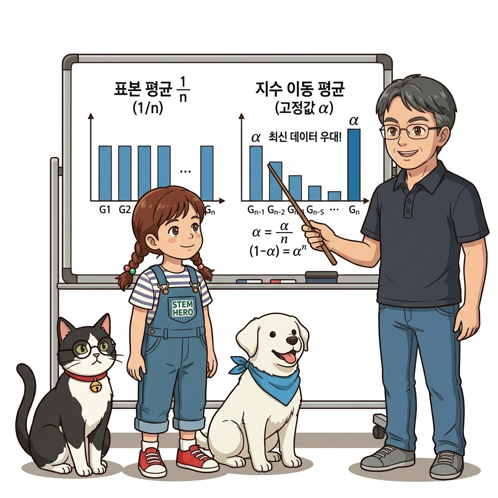
그림 09-4-7 모든 과거 데이터를 똑같이 대우하는 표본 평균(왼쪽)과, 어제의 낡은 기억은 잊고 오늘의 고수 경험을 우대하는 지수 이동 평균(오른쪽)의 가중치 비교왜 1/n 대신 고정된 학습률 계수 α(알파, 보통 0.1)를 곱해야 할까요?
- 수정 전 (표본 평균 1/n)의 치명적 결함:
- 표본 평균은 1번째 에피소드부터 n번째 에피소드까지 모든 데이터에 똑같이 1/n의 동일한 가중치를 부여합니다.
- 하지만 1번째 에피소드의 에이전트는 미로 벽에 쿵쿵 부딪히며 방황하던 ‘완전 초보 시절’의 경험입니다. 반면 10,000번째 에피소드의 에이전트는 정책이 성숙해진 ‘베테랑 고수 시절’의 경험입니다.
- 초보 시절의 바보 같은 경험과 고수 시절의 현명한 경험을 똑같이 1/n로 동등하게 평균 내는 것은 논리적으로 맞지 않습니다!
- 수정 후 (고정 학습률 α 지수 이동 평균의 마법):
- 점화식을 과거로 거슬러 올라가며 전개해 보면 놀라운 수학적 사실이 드러납니다:
Qn = αG(n) + α(1 - α)G(n-1) + α(1 - α)2G(n-2) + … + (1 - α)nQ0
- 가장 최근에 얻은 경험 G(n)에는 온전한 가중치 α가 곱해지지만, 과거 k스텝 전의 낡은 데이터에는 (1 - α)k 배율로 가중치가 기하급수적으로 줄어듭니다!
- 즉, 초보 시절의 낡은 기억은 자연스럽게 잊어버리고(망각), 가장 최근의 똑똑해진 경험을 압도적으로 우대하게 됩니다.
- 점화식을 과거로 거슬러 올라가며 전개해 보면 놀라운 수학적 사실이 드러납니다:
이처럼 학습이 진행됨에 따라 정책이 진화하고, 그 결과 수익 데이터가 생성되는 확률 분포 자체가 시시각각 변화하는 문제를 통계학에서는 ‘비정상 문제(Non-Stationary Problem)’라고 부릅니다. 정책 제어처럼 데이터 분포가 변하는 비정상 환경에서는 고정 학습률 α를 사용한 지수 이동 평균이 절대적인 필수 공식입니다.
09.4.5 완성된 몬테카를로 정책 제어 클래스와 전체 실행
앞서 배운 2대 개선 사항(ε-탐욕 탐색 + α 지수 이동 평균)을 완벽하게 반영한 몬테카를로 정책 제어의 전체 순환 아키텍처를 확인해 봅시다.
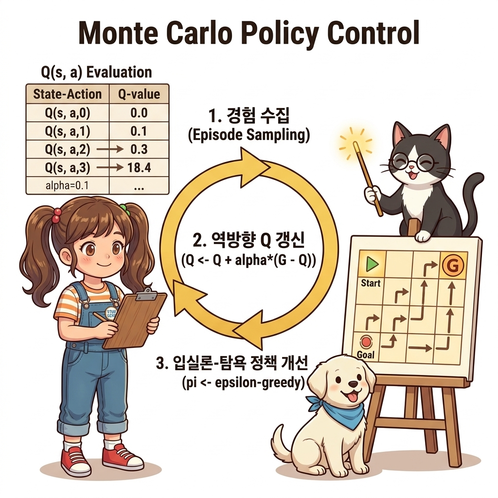
그림 09-4-8 몬테카를로 정책 제어의 3단계 순환 아키텍처: 경험 수집(Episode Sampling) → 역방향 Q 갱신(Q ← Q + α(G - Q)) → 입실론-탐욕 정책 개선(π ← ε-greedy)1) 완성된 McAgent 클래스 코드
from collections import defaultdict
import numpy as np
def greedy_probs(Q, state, epsilon=0, action_size=4):
qs = [Q[(state, action)] for action in range(action_size)]
max_action = np.argmax(qs)
base_prob = epsilon / action_size
action_probs = {action: base_prob for action in range(action_size)}
action_probs[max_action] += (1 - epsilon)
return action_probs
class McAgent:
def __init__(self):
self.gamma = 0.9
self.epsilon = 0.1 # [개선 1] ε-탐욕 정책의 탐색 비율 (10%)
self.alpha = 0.1 # [개선 2] Q 함수 갱신 시의 고정 학습률 α
self.action_size = 4
random_actions = {0: 0.25, 1: 0.25, 2: 0.25, 3: 0.25}
self.pi = defaultdict(lambda: random_actions)
self.Q = defaultdict(lambda: 0)
self.memory = []
def get_action(self, state):
action_probs = self.pi[state]
actions = list(action_probs.keys())
probs = list(action_probs.values())
return np.random.choice(actions, p=probs)
def add(self, state, action, reward):
data = (state, action, reward)
self.memory.append(data)
def reset(self):
self.memory.clear()
def update(self):
G = 0
for data in reversed(self.memory):
state, action, reward = data
G = self.gamma * G + reward
key = (state, action)
# ❶ 고정값 α 기반 지수 이동 평균 갱신!
self.Q[key] += (G - self.Q[key]) * self.alpha
# ❷ ε-탐욕 탐색을 적용하여 정책 즉시 개선!
self.pi[state] = greedy_probs(self.Q, state, self.epsilon)
2) 10,000회 에피소드 학습 실행 스크립트
이제 완성된 McAgent를 3 × 4 그리드 월드 환경에 투입하여 총 10,000번의 에피소드로 학습시켜 보겠습니다:
from common.gridworld import GridWorld
env = GridWorld()
agent = McAgent()
episodes = 10000
for episode in range(episodes):
state = env.reset()
agent.reset()
while True:
action = agent.get_action(state)
next_state, reward, done = env.step(action)
agent.add(state, action, reward)
if done:
agent.update() # 에피소드 완주 시 Q 함수 및 정책 일괄 갱신!
break
state = next_state
# 학습 완료 후 최종 수렴된 Q 함수와 최적 정책 화살표 렌더링
env.render_q(agent.Q)
3) 학습 결과 해석: 최적 정책 화살표 맵
학습 완료 후 env.render_q(agent.Q)가 화면에 출력한 시각화 결과는 다음과 같습니다:
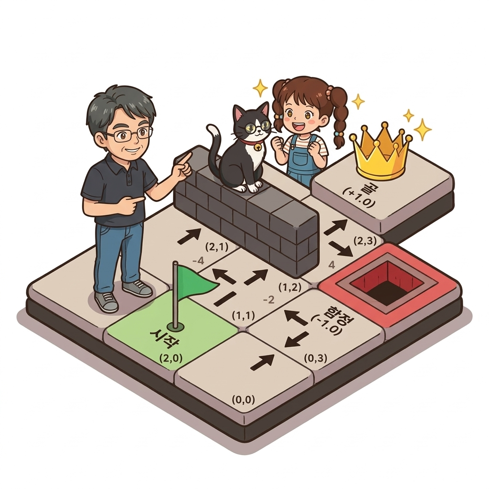
그림 09-4-9 10,000번 에피소드 후 수렴된 4방향 Q 함수와 최적 탈출 경로 화살표 맵결과 지도를 자세히 분석해 봅시다:
- 사방 삼각형의 의미: 격자의 각 칸은 상, 하, 좌, 우 4개의 삼각형으로 분할되어 있으며, 각 삼각형의 색상과 숫자가 바로 해당 방향의 행동 가치 Q(s, a)를 나타냅니다.
- 최적 경로 화살표:
- 출발 지점
(2, 0)에서 시작한 에이전트는 위험천만한 마이너스 함정((1, 3), 보상 -1.0) 칸을 멀리 피해 위쪽 안전 경로((0, 0) → (0, 1) → (0, 2) → (0, 3))로 완벽하게 우회합니다. - 플러스 골(
(0, 3), 보상 +1.0) 지점으로 가장 빠르고 안전하게 도달하는 완벽한 최적 정책 화살표가 뚜렷하게 형성되었습니다!
- 출발 지점
환경의 상태 전이 확률이나 보상 행렬 공식을 전혀 모르는 완전한 백지상태였지만, 몬테카를로 경험 수집 + Q 함수 채택 + ε-탐욕 탐색 + α 지수 이동 평균이라는 강력한 도구들이 맞물려 스스로 완벽한 최적 정책 지도를 찾아낸 것입니다.
09.4.6 핵심 정리: 몬테카를로 정책 제어 3대 기둥
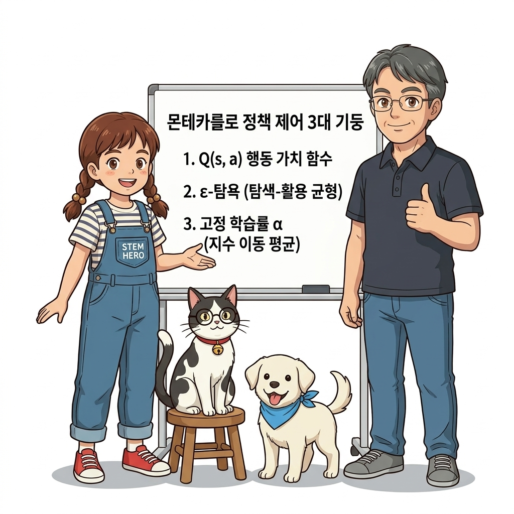
그림 09-4-10 Q 함수, 입실론 탐욕, 고정 알파의 3대 기둥을 세우고 오프-정책의 새로운 장으로 나아가는 도로시와 지니| 3대 핵심 기둥 | 핵심 원리 및 수학적 이유 | 미적용 시 발생하는 문제점 |
|---|---|---|
| ① 행동 가치 함수 Q(s, a) | 전이 확률 p(s' | s, a) 없이도 argmaxa Q(s, a)로 즉시 최적 행동 결정 가능 | V(s)를 쓰면 환경 모델의 확률 수식이 필요해 모델 프리 환경에서 계산 불가 |
| ② ε-탐욕 정책 (ε-Greedy) | 1 - ε 확률로 최선 행동을 취하고, ε 확률로 4방향을 골고루 탐색 | 100% 완전 탐욕 시 조기 수렴으로 인해 더 큰 보상이 있는 경로를 영원히 미탐색 |
| ③ 고정 학습률 α (지수 이동 평균) | (1 - α)k 지수 감쇠로 과거 초보 데이터는 잊고 최신 고수 경험을 우대 | 1/n 표본 평균 시 낡은 초보 시절의 데이터가 발목을 잡아 비정상 문제에서 수렴 실패 |
👨🏫 이호진 교수님의 직강 노트:
“몬테카를로 정책 제어의 완성은 강화학습이 단순한 통계 계산기를 넘어, 미지의 환경을 스스로 탐험하고 최선의 길을 개척해 나가는 ‘진정한 지능(AI)’으로 도약하는 감동적인 순간입니다.
하지만 ε-탐욕 정책은 학습이 완전히 끝난 후에도 10%의 확률로 무작위 실수를 저지른다는 아쉬운 타협점이 있습니다.
이를 완벽하게 극복하기 위해, 다음 9.5절에서는 ‘마음껏 탐색하는 행동 정책’과 ‘오직 최선만을 달리는 대상 정책’을 분리하는 강화학습의 최고봉, 오프-정책(Off-Policy)과 중요도 샘플링의 세계로 떠나보겠습니다!”
🐱 조교 지니의 응원 노트:
“축하합니다냥, 도로시와 여러분! 이제 우리 에이전트는 미로에서 길을 헤매지 않고 스스로 최적의 탈출 지도를 그려냈어요! Q 함수, 입실론(ε) 탐욕, 그리고 알파(α) 지수 이동 평균의 삼위일체를 가슴에 품고, 다음 절에서 더욱 마법 같은 오프-정책을 만나보아요!”